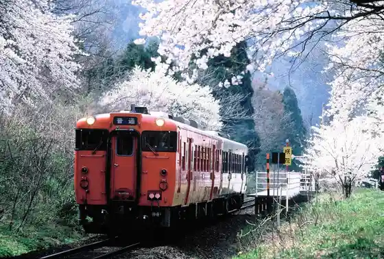
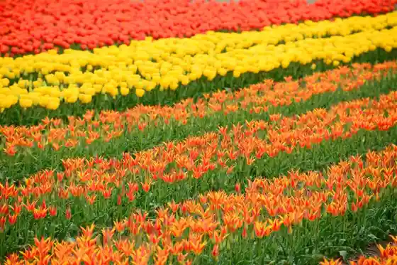
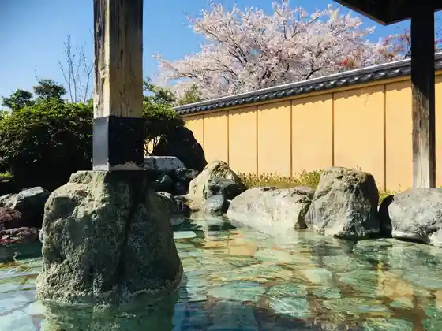
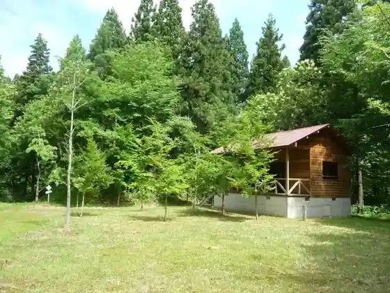

Sakika Onsen
Gosen, Niigata · 0250-43-3911 · Official / source link

Gosen Su Hon no Churippu
Gosen, Niigata · 0250-43-3911 · Official / source link

Muramatsu Sakurando Onsen
Gosen, Niigata · 0250-58-1611 · Official / source link

Gosen Forest Park Campground
Gosen, Niigata · 0250-42-5194 · Official / source link

Gosen Hachiman Shrine
Gosen, Niigata · 0250-42-3220 · Official / source link
Ogon Village
Gosen, Niigata · 0250-43-3911 · Official / source link
Osawa Limestone Cave
Gosen, Niigata · 0250-43-3911 · Official / source link
Gosen Nittofesu 2026
Gosen, Niigata · 0250-42-2156 · Official / source link
Muramatsu Park
Gosen, Niigata · Official / source link
Raporute Gosen
Gosen, Niigata · 0250-41-1612 · Official / source link
Muramatsu no Koi Ryori
Gosen, Niigata · 0250-58-7181 · Official / source link
Senken Kawa Gorge
Gosen, Niigata · Official / source link
Gosen Kaimono Plaza (Gosen Teiki Roten Market)
Gosen, Niigata · 02-43-3911 · Official / source link
Murakawa Kanko Kuri Sono
Gosen, Niigata · 0250-58-3296 · Official / source link
Chuken Tama Ko Zo
Gosen, Niigata · 0250-58-7181 · Official / source link
Ogon no Sato Hall
Gosen, Niigata · 0250-58-1808 · Official / source link
Takiya Jiko Tera
Gosen, Niigata · 0250-42-5195 · Official / source link
Awashima Park
Gosen, Niigata · 0250-43-3911 · Official / source link
Hayade Kawa Dam
Gosen, Niigata · 0250-43-3911 · Official / source link
Dai 42 Kai Sakika Onsen Suichu Hanabitaikai
Gosen, Niigata · 0250-43-3911 · Official / source link
Yuki Toro Gao Demukae Bessho Kokuzo Mikoto Reisai
Gosen, Niigata · 0250-43-3911 · Official / source link
Kametoku Izumi
Gosen, Niigata · 0250-58-7181 · Official / source link
Sakurando Bussan Chokubai Tokoro (Yorine Ie)
Gosen, Niigata · 0250-58-1658 · Official / source link
Sato Ringo Sono
Gosen, Niigata · 0250-58-5808 · Official / source link
Charenji Land Sugikawa
Gosen, Niigata · 0250-55-6543 · Official / source link
Okura Yama Okura Yama Tozanguchi
Gosen, Niigata · 0250-43-3911 · Official / source link
Gosen no Churippu
Gosen, Niigata · 0250-43-3911 · Official / source link
Jiko Tera no Suginami Ki
Gosen, Niigata · 0250-42-5195 · Official / source link
Muramatsu Teiki Roten Market
Gosen, Niigata · 0250-43-3911 · Official / source link
Hakusan Hiru no Tozanguchi
Gosen, Niigata · 0250-43-3911 · Official / source link
Muramatsu Park Shika Sono
Gosen, Niigata · 0250-43-3911 · Official / source link
Seiryu no Satokawa Se Park
Gosen, Niigata · 0250-43-3911 · Official / source link
Oyamada Higan Sakuragi Hayashi
Gosen, Niigata · 0250-42-5195 · Official / source link
Hayade Kawa Gorge
Gosen, Niigata · 0250-43-3911 · Official / source link
Fufu Taki
Gosen, Niigata · 0250-43-3911 · Official / source link
Taka Tateyama Bodai Terayama Taka Tateyama Tozanguchi
Gosen, Niigata · 0250-43-3911 · Official / source link
Gosen Muramatsu Local History Museum Mingu Museum
Gosen, Niigata · 0250-58-8293 · Official / source link
Gosen Shiei Yakyujo
Gosen, Niigata · 0250-42-5194 · Official / source link
Muramatsu Joka Zu
Gosen, Niigata · 0250-58-8293 · Official / source link
Gosen Sakura Aroma Workshop
Gosen, Niigata · 0250-47-7081 · Official / source link
Kamisato Ya no Ohatsukiicho
Gosen, Niigata · 0250-42-5195 · Official / source link
Kirihata no Chichi Icho
Gosen, Niigata · 0250-42-5195 · Official / source link
Castle Ruins Park
Gosen, Niigata · 0250-43-3911 · Official / source link
Furusato Lookout
Gosen, Niigata · Official / source link
Ya Tsu Hachiman Shrine Honden
Gosen, Niigata · 0250-42-5195 · Official / source link
Haguro Shrine no Suo Sugi (Suosugi)
Gosen, Niigata · 0250-42-5195 · Official / source link
Echigo Shigadojo (Jiko Tera) Yasura Gi Shugyo Experience
Gosen, Niigata · 0250-58-4000 · Official / source link
Maki no Mamoru Shu (Emori) Sugi
Gosen, Niigata · 0250-42-5195 · Official / source link
Sakika Onsen
Gosen, Niigata · 0250-43-3911 · Official / source link
Muramatsu O Shiro Ezu Men
Gosen, Niigata · 0250-42-5195 · Official / source link
Burari Hakken Castle Town Jisha Meguri
Gosen, Niigata · 0250-47-8388 · Official / source link
Gorin Senkoku Toba
Gosen, Niigata · 0250-42-5195 · Official / source link
Kambara Kagura
Gosen, Niigata · 0250-42-5195 · Official / source link